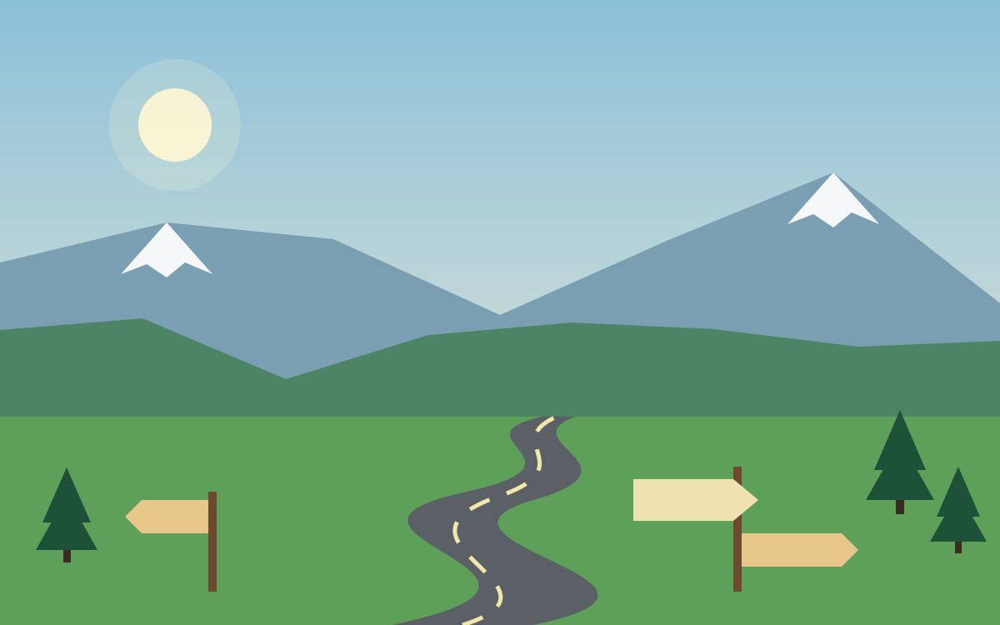

Routes
Getting there
Check current road access and available transport through official and local sources.
Routes & transport – Getting thereDiscover Kashmir
Everything you need to start planning a thoughtful and informed journey.
Explore practical information before choosing your route.

Check current road access and available transport through official and local sources.
Routes & transport – Getting there
Weather, road conditions and mountain access can vary greatly by season.
Seasonal planning – When to visit
Research local guesthouses and verified stays before departure.
Accommodation – AccommodationUse an up-to-date map and confirm road conditions locally. High mountain roads can close without notice. This prototype does not calculate routes or display live transport information.
Conditions can change rapidly. Higher-altitude attractions may be inaccessible during snow, heavy rainfall or landslide risk. Confirm conditions shortly before departure.
Research local guesthouses and verified stays before departure, and confirm availability and access directly. This prototype lists no accommodation providers and takes no bookings.
Important: This is a student prototype, not an official advisory. Some LOC-related areas are restricted. Never rely on this website alone for access, security or emergency decisions.
Verify any required permissions and restrictions with relevant local authorities before visiting remote or border-adjacent areas.
Review forecasts and local road updates; pack appropriate layers, water, essential medicines and emergency supplies.
Use authorized paths, avoid littering, ask permission before photographing people, and follow local guidance.
Before departure, record verified emergency numbers and your accommodation contact. Do not assume mobile coverage is available everywhere.
This is a demonstration section. The prototype has no contact form: no messages are submitted or stored, and the student project operates no tourist support service.
Before travel: consult current official tourism, road and safety sources for confirmed information.
Explore destinationsAll images are original stylised SVG illustrations drawn for this project; they are not photographs of the places named. Destination descriptions are short editorial text written by the authors for the prototype and have not been checked against official tourism sources.